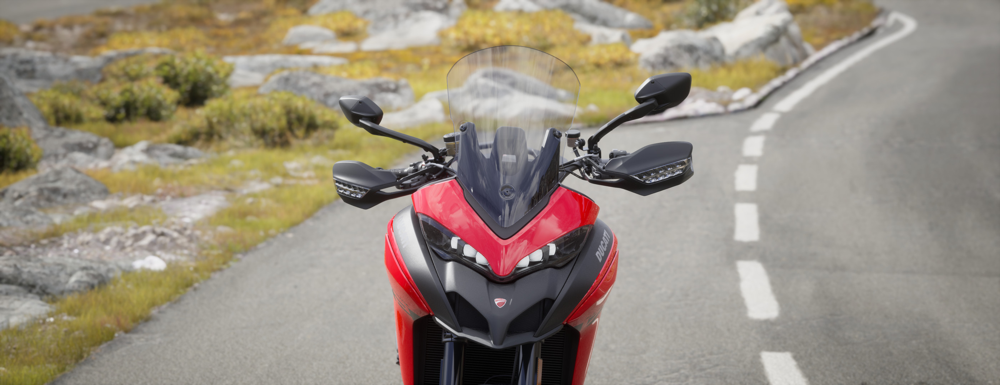
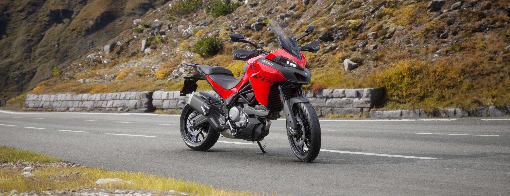

.jpg "Ducati Multistrada V2s")
.jpg "Ducati Multistrada V2s")
.jpg "Ducati Multistrada V2s")
La famiglia Ducati Multistrada prosegue la sua evoluzione con la presentazione della nuova Multistrada V2: la moto ideale per godersi a pieno ogni viaggio, versatile nell’utilizzo quotidiano e in città, sempre con la sportività e lo stile inconfondibile che caratterizzano ogni Ducati.
La Multistrada V2 è una moto tecnologicamente avanzata, con una ciclistica sofisticata e un pacchetto elettronico estremamente completo, senza dimenticare il motore, l'ultima evoluzione del Testastretta 11°, e rappresenta la porta d'accesso ideale all'universo tourer di Ducati.
La nuova bicilindrica della famiglia dual Ducati è una moto a 360°, sempre più intuitiva, confortevole, divertente e accessibile, grazie anche all’introduzione della versione 35 kW per i possessori di patente A2.
Il bicilindrico a L da 937 cc rimane fedele a se stesso: fin dai 3.500 giri/min ha un'erogazione corposa e lineare, per poi allungare con decisione fino alla zona rossa, dove si viene conquistati da un sound avvolgente.
Modalità di guida:
Sport: risposta più aggressiva ma mai troppo reattiva
Enduro: molto morbida per i percorsi più impegnativi
Touring: via di mezzo che non stanca
Urban: ideale per la città
Per il 2022, i tecnici di Ducati hanno montato bielle più leggere e modificato alcune componenti del cambio, così da migliorare la prontezza del motore e la fluidità delle cambiate.
Alla nuova Multistrada V2 abbiamo dedicato una nuova raffinata grafica che riporta il nome della moto su entrambi i lati.
Colorazioni:
Rosso Ducati: abbinato a cerchi neri
Thrilling Black & Street Grey: disponibile per la versione S
"Abbiamo dedicato particolare attenzione ad alcuni particolari specifici. Come per esempio le nuove cover motore e il montaggio dei serbatoietti freno e frizione che sono stati separati dai paramani, proprio per aumentare la robustezza della moto."
Altezza sella: 830 mm per facile accessibilità
Miglioramenti:
- Nuovi specchi retrovisori
- Nuovi cerchi in lega alleggeriti
- Dischi freni con flangia in alluminio
- Sella ergonomica con nuovo design
- Manubrio rialzato per posizione di guida naturale
- Spazio per bagagli aumentato
- Riduzione peso di 5kg rispetto al modello precedente
La nuova ergonomia della Multistrada V2 è stata studiata per garantire il massimo comfort sia nelle lunghe percorrenze che nell'uso quotidiano. La sella più stretta e la nuova forma del serbatoio permettono un migliore appoggio dei piedi a terra.
La dotazione elettronica è estremamente completa, specialmente nella versione S. I sistemi di ausilio alla guida di ultima generazione, sono efficaci e mai invasivi, in modo da garantire sicurezza e comfort in ogni condizione.
Sistemi di sicurezza:
- Cornering ABS Bosch
- Ducati Traction Control (DTC)
- Ducati Wheelie Control (DWC)
- Vehicle Hold Control (VHC)
Display:
- Display TFT a colori da 5"
- Ducati Connect per smartphone
- Navigazione turn-by-turn
L’altezza della moto è stata ridotta a 830 mm, con una forma della sella che è stata ridisegnata e ora è più stretta e compatta tra le gambe del pilota, in modo da permettere di toccare agevolmente a terra con i piedi grazie ad un arco del cavallo di soli 1790mm
Continua a leggereL’importante lavoro di alleggerimento svolto sulla moto ha permesso di ottenere un peso a secco finale di 199 kg (202 kg per la versione S), con una riduzione di 5 kg rispetto alla Multistrada 950. Il motore ha perso circa 2 kg.
Continua a leggereLo schema adottato per la ciclistica della Multistrada V2 prevede un telaio a traliccio anteriore insieme a due telaietti laterali fusi, chiusi da un elemento portante posteriore realizzato in tecnopolimero caricato in fibra di vetro per la massima rigidezza torsionale, a cui si aggiunge il forcellone bibraccio realizzato in allumino fuso in conchiglia.
Continua a leggereLa Multistrada V2 è equipaggiata con una forcella anteriore a steli rovesciati da 48 mm di diametro da 170 mm di escursione, piedino fuso dedicato, regolabile in tutte le caratteristiche precarico molla, freno idraulico in estensione e compressione.
Continua a leggereLa sicurezza, il comfort e le prestazioni della Multistrada V2 sono garantite anche dallo stato dell’arte per quanto riguarda i sistemi di assistenza elettronici. Nella versione S il viaggio diventa a 5 stelle grazie a un pacchetto full-optional di riferimento.
La Multistrada V2 è dotata di quattro Riding Mode (Sport, Touring, Urban, Enduro) che agiscono sui sistemi di ausilio alla guida, sulla mappatura del motore e sulle sospensioni Skyhook (per la versione S) rendendo completamente personalizzabile il carattere della moto.
La piattaforma inerziale IMU (Inertial Measurement Unit) a 6 assi Bosch permette il funzionamento Cornering dell'ABS, ossia variabile in funzione dell'angolo di piega.
Il cruscotto della Multistrada V2 è costituito da un ampio LCD ad alta visibilità. La versione S è, invece, equipaggiata con display TFT a colori da 5" ad alta risoluzione, con un’interfaccia intuitiva che rende facile la navigazione del menu. Entrambe le versioni sono predisposte per l’integrazione con il Ducati Multimedia System.